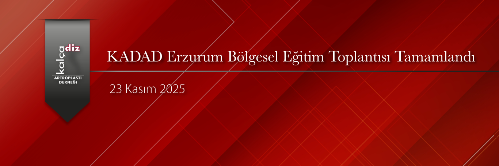

KADAD Erzurum Bölge Toplantısı “Primerden Revizyona Kalça Artroplastisi” başlığıyla 23 Kasım 2025 günü Erzurum’da Atatürk Üniversitesi Rektörlük Mavi Salonda Erzurum, Kars, Ağrı, Rize, Trabzon, Gümüşhane, Erzincan ve Samsun’dan gelen 65 Uzman ve Akademisyenin katılımları ile gerçekleştirildi.
Rize, Samsun, Erzincan, Erzurum Üniversiteleri Ortopedi Ana Bilim Dallarından ve KADAD Yönetim Kurulundan Eğitmenlerin bilimsel düzeyi yüksek sunumları ile Primerden Revizyona Kalça Artroplastisi tüm detayları ile ele alındı.
Katılımcıların da güzel sorularıyla yüksek düzeyde tartışmalar yapıldı. Kongreye katılımları ve sunumları ile destek veren herkese ve özellikle sıcak ev sahiplikleriyle katılımcılara bilimsel, sosyal ve gastronomik çok güzel 2 gün yaşatan Erzurum Atatürk Üniversitesi Anabilim Dalının tüm üyelerine KADAD YK olarak çok teşekkür ederiz.
